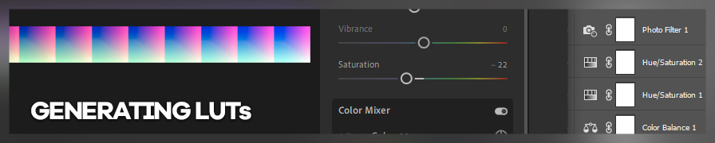
LUT（查找表）是一种强大的工具，可以彻底改变任何图片的外观。本指南专注于为 ReShade 生成 LUT 的方法。
为什么我要使用 LUT？
LUT（查找表）是一种低成本且简便的色彩变更方式，无需依赖大量消耗性能的着色器堆叠。你可以用它让游戏内色彩看起来更自然（色彩校正），或为游戏打造特定的风格化外观（色彩分级）。
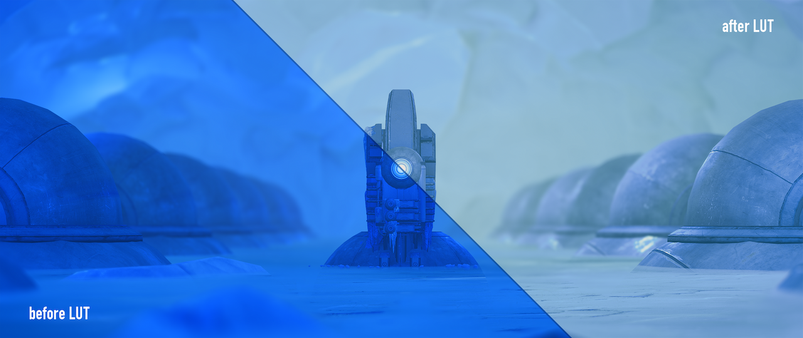
Mass Effect: Andromeda如何使用 LUT？
你需要这样一张贴图：
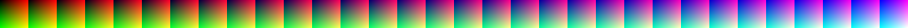
这张贴图就是 LUT。具体来说，这是一个中性 LUT。它本身什么效果都不产生，但却是你能用 LUT 做到一切的起点。
这张贴图极为重要！毕竟它就是 LUT 本身。请务必保存好它！你可以下载上方的贴图，也可以在标准 reshade-shaders 的 Textures 文件夹中找到名为 lut.png 的文件。请备份好它，你会需要多份副本。
ReShade 使用 LUT.fx 着色器来加载并应用 LUT。注意 LUT.fx 只能处理一个（1）LUT，我强烈建议将这唯一的 LUT 用于色彩校正。你可以通过 MultiLUT.fx 着色器加载多个 LUT 并在它们之间切换。
如何制作一个 LUT？
本指南介绍使用以下工具生成 LUT 的方法：
- ReShade
- Adobe Photoshop
- Adobe Lightroom
此外，还包含 MultiLUT.fx 着色器的使用指南。
通过侧边栏导航到各个章节。
本指南不涉及 GIMP，因为旧版 LUT 指南仍然适用。
ReShade
所需工具：
- 你选择的游戏（已安装 ReShade）
qUINT_lightroom.fx着色器- 任何可更改色彩的 ReShade 着色器
本文使用 ReShade 4.3.0，并假定你已熟悉 ReShade 的配置方法。
第一步：准备工作
qUINT_lightroom.fx 不包含在标准着色器集合中。请从 qUINT 框架中下载。
虽然 qUINT Lightroom 本身已足够实现非常广泛的色彩调整，但本指南还将把其他色彩分级/校正着色器（如 FilmicPass.fx、LevelsPlus.fx、Technicolor.fx 等）的效果融入 LUT 中。
将这些着色器"烘焙"到单个 LUT 中是有意义的，因为每个着色器都会带来少量性能开销。这些开销虽然微小，但累积起来不容忽视。相比之下，LUT.fx 着色器的性能影响要小得多，可以为你节省帧数。
此外，保存这些 LUT 还能在未来 ReShade 更新导致着色器异常时，保留你的预设效果。
第二步：配置 ReShade
我们将利用 qUINT Lightroom 在屏幕上生成 LUT 的功能。该着色器必须位于列表最顶部，如下所示：
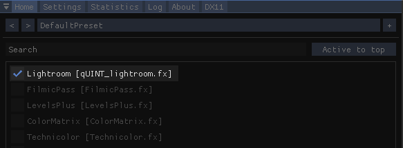
将其置于顶部后，其下方的所有着色器都会在其之上加载，意味着它们的效果将被记录到 LUT 中。
勾选 Enable LUT Overlay 以生成 LUT，并将 LUT tile size 和 LUT tile count 均设置为 32。
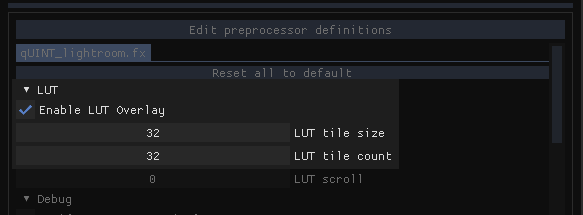
本文不是 qUINT Lightroom 的使用指南，因此不会介绍该着色器其余功能的使用方法。不过，如果你已有使用经验并对调整结果满意，请继续下一步。
qUINT Lightroom 设置完成后，我们就可以开始施展魔法了。如果不想让 LUT 覆盖层妨碍编辑，可以禁用该着色器或 LUT 覆盖层。启用你喜欢的着色器，然后尽情调整。
此处使用的着色器必须只影响色彩。添加泛光、颗粒感、暗角、镜头效果及其他视觉效果（包括 AO 和景深等深度着色器）的着色器只会破坏你的 LUT。
对结果满意后，就可以进行导出了。
第三步：导出
最后一步是对游戏进行截图，最好使用 ReShade 内置的截图工具。截图中必须包含 qUINT Lightroom 生成的 LUT 覆盖层。如果操作正确，由于你添加了所有色彩效果，LUT 看起来应该与原来不同。
从截图中精确裁剪出 LUT 部分。裁剪必须精确到像素。将其保存为 PNG 格式。不要以 JPG 等有损格式导出，LUT 中不能有压缩失真。
建议将此文件导出为 lut.png，直接保存到 Textures 文件夹中，替换原有的 lut.png。这样你就可以立即通过 LUT.fx 使用你的 LUT 了。
补充：LUT 精度
调整 LUT tile size 和 LUT tile count 可以改变 LUT 的精度。通常情况下无需修改，32 的图块尺寸和数量已足够精确。如果你将这些值修改为不同于 32 的数值，则需要修改 LUT.fx 才能正确显示 LUT。如需修改着色器，请跳至底部 MultiLUT 章节的 LUT 变体与更换图集 部分。
Adobe Photoshop
所需工具：
- 至少一张游戏截图
- Adobe Photoshop CS4 或更高版本 （需要调整图层功能）
本文使用 Photoshop CC 2019，游戏截图来自 GreedFall。
第零步：截图拼贴
虽然并非必须，但制作多张截图的拼贴可以确保你的 LUT 效果在不同场景下仍然出色。截图应涵盖不同的时间段和地点！如果你正在制作校正型 LUT，这一点尤为重要。
第一步：调整图层
将截图加载到 Photoshop 后，就可以开始工作了。我将专注于对所加载截图进行色彩分级。我们将使用调整图层。调整图层是一种无损的图像编辑方式，其效果可以复制到不同文档。
首先从"调整"面板添加调整图层。
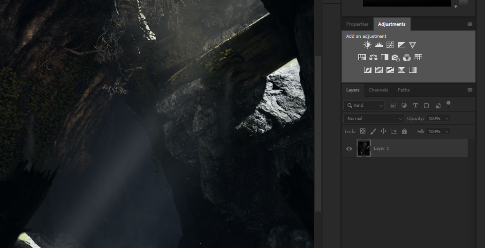
尽情使用调整图层！放心大胆地叠加它们，因为最终它们都会被烘焙成一张贴图。如果你追求风格化效果，不妨尝试"色调分离"、"阈值"和"渐变映射"等更特别的调整选项，也可以尝试更改混合模式！
尽情调整后，右侧应该出现了一些额外的图层。
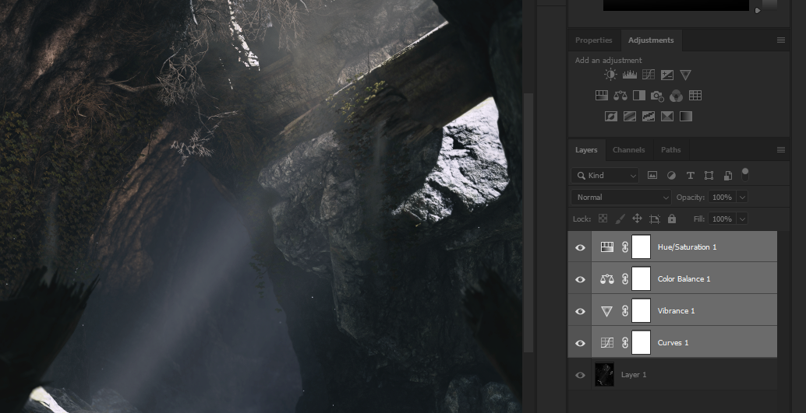
曲线用于对比度，自然饱和度用于饱和度，色彩平衡用于分离色调，色相/饱和度用于选择性色彩（绿色去饱和）本文不是图像编辑指南。如果你想了解如何使用这些调整图层，我推荐How-To Geek 的这篇指南作为入门介绍。
你可能注意到调整图层图标旁边有链条和白色画布图标。
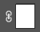
忽略它们。这些是调整图层的蒙版。调整蒙版（显然）不会迁移到 LUT 中。
第二步：处理 LUT
接下来，你需要将之前提到的中性 LUT 贴图作为单独的文档加载。请确保使用的是中性 LUT。否则完成后你会得到非常奇怪的色彩。
你只需将截图文档中的调整图层复制到新的 LUT 文档即可。可以使用传统的 Ctrl+C / Ctrl+V，也可以选中所有调整图层，右键点击，选择 复制图层...，然后选择 LUT 文档。
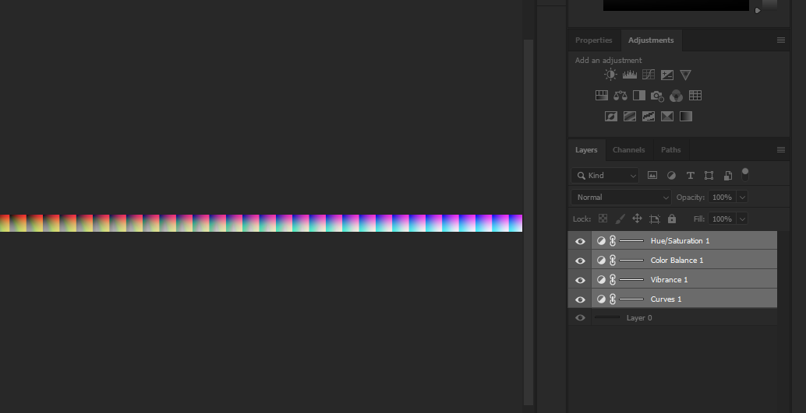
根据调整幅度的大小，LUT 看起来可能有些奇怪。上图中我的 LUT 在图像左侧开始显得很不正常，这是因为我将绿色完全去饱和了。如果操作正确，这里无需担心。
第三步：导出
最后一步是将图像导出为 PNG 格式。不要以 JPG 等有损格式导出，LUT 中不能有压缩失真。除非你想要一种奇异的损坏效果。
建议将此文件导出为 lut.png，直接保存到 Textures 文件夹中，替换原有的 lut.png。这样你就可以立即通过 LUT.fx 使用你的 LUT 了。
补充：.CUBE、.3DL 及其他 3DLUT 格式
网上找到的 LUT 通常是 .CUBE、.3DL、.CSP、.ICC 等非图像文件格式。如需使用，可以通过"颜色查找"调整图层将其应用到中性 LUT 上。
Adobe Lightroom
所需工具：
- 至少一张游戏截图
- Adobe Lightroom （任意版本）
本文使用 Lightroom CC 2019（非 Lightroom Classic）。除少数界面差异外，整体步骤完全相同。游戏截图来自 Mass Effect: Andromeda。
第零步：截图拼贴
虽然并非必须，但制作多张截图的拼贴可以确保你的 LUT 效果在不同场景下仍然出色。截图应涵盖不同的时间段和地点！如果你正在制作校正型 LUT，这一点尤为重要。
第一步：制作预设
将截图导入 Lightroom。如果你从未使用过 Lightroom，不用担心，它相当直观。右侧是所有工具（在 Lightroom Classic 中位于"修改照片"模块），尽情调整，看看效果如何！
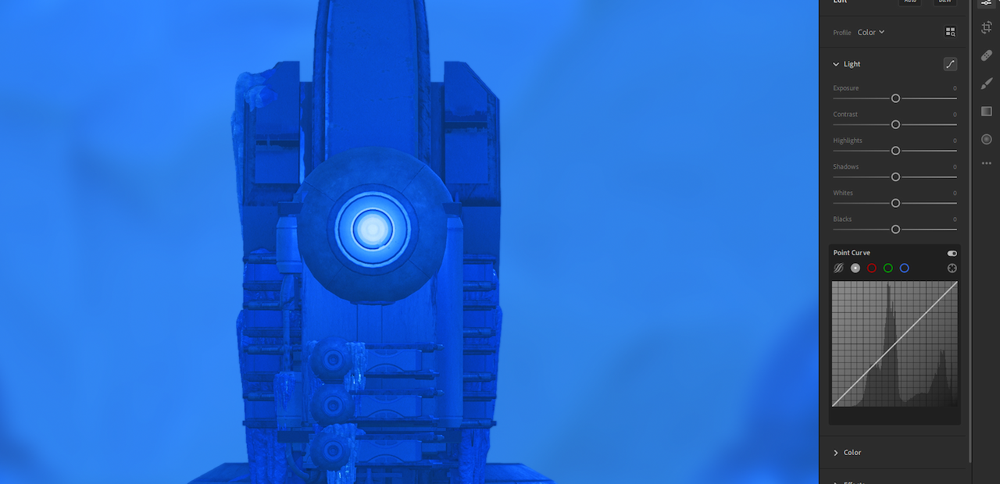
本文不是使用 Lightroom 编辑图像的指南。网上有大量介绍 Lightroom 功能的教程。
经过几分钟的调整后，这是我的结果。
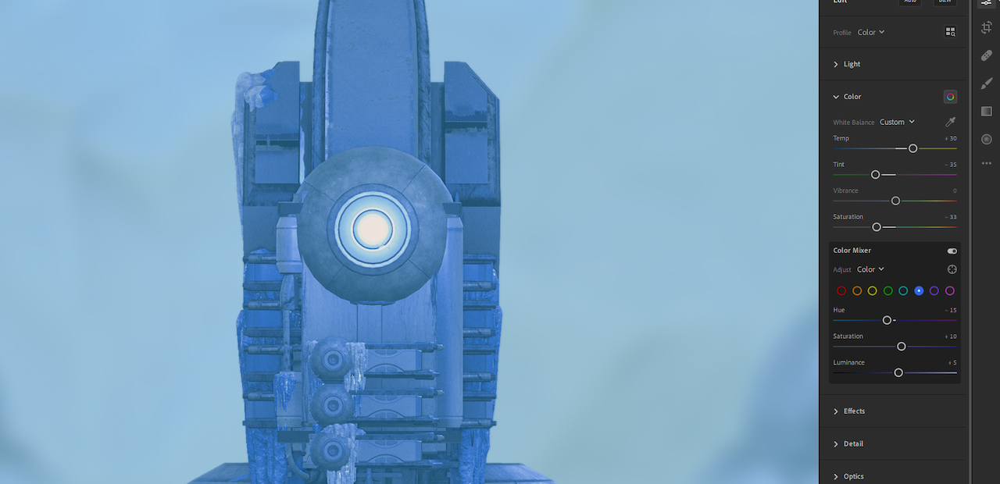
对结果满意后，将其保存为预设。
不要在预设中包含"纹理"、"清晰度"、"去朦胧"、"晕影"、"颗粒"、"锐化"、"降噪"以及任何镜头校正选项。这些设置会完全破坏你的 LUT。
第二步：处理 LUT
导入之前提到的中性 LUT 贴图。请确保使用的是中性 LUT。否则完成后你会得到非常奇怪的色彩。
将保存好的预设应用到中性 LUT 上。
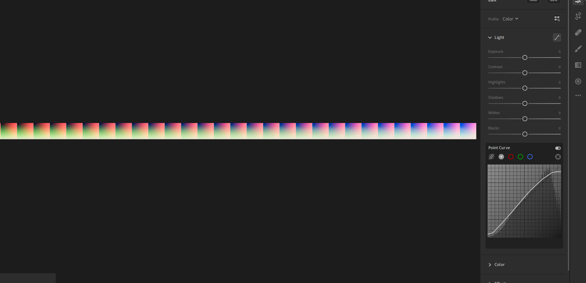
根据调整幅度的大小，LUT 看起来可能有些奇怪。上图中我的 LUT 看起来相当褪色且过曝，这是因为我对其进行了大幅度的调整。不过我并不担心，因为这些变化是有意为之的。
第三步：导出
最后一步是将图像导出为 PNG 格式。不要以 JPG 等有损格式导出，LUT 中不能有压缩失真。除非你想要一种奇异的损坏效果。
如果你不使用 Lightroom Classic，在保存为 PNG 之前还有一个额外步骤，需要用到 Photoshop。在"文件"菜单下，选择 在 Photoshop 中编辑...。这将自动启动 Photoshop 并加载好你的 LUT，然后像往常一样导出为 PNG 即可。
建议将此文件导出为 lut.png，直接保存到 Textures 文件夹中，替换原有的 lut.png。这样你就可以立即通过 LUT.fx 使用你的 LUT 了。
补充：Lightroom 预设
如果你是 Lightroom 的忠实用户，很可能已经有了自己制作或下载的预设。只需从第二步继续，使用手头的预设即可。
MultiLUT
MultiLUT.fx 是一个着色器，顾名思义，它允许你加载多个 LUT 并在它们之间切换。它通过将所有 LUT 收集到一个图集中来实现这一功能。
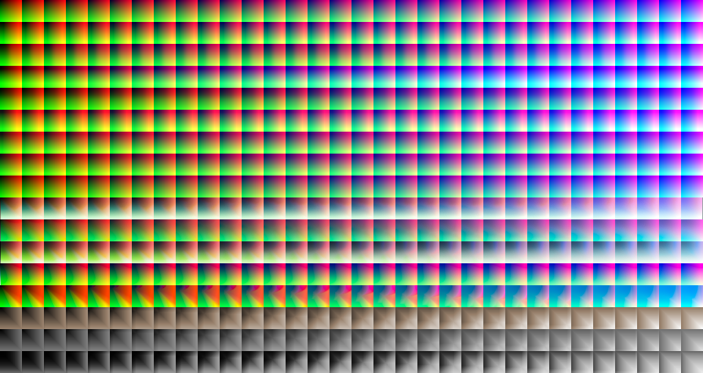
这是默认的 MultiLUT 图集。看到这里，你应该已经知道 LUT 长什么样了——这堆方块中的每一行都是一个独立的 LUT。
你可以直接使用这个着色器，也可以对其进行修改。
修改方法很简单，只需将每行 LUT 替换为你迄今制作的众多 LUT 之一即可。建议保留顶部第一行的 LUT 不变；它是一个中性 LUT。
重命名 LUT
你可能不希望你的 LUT 被命名为 Color 1、Color 2、Color 3 (Blue oriented) 等，下面介绍如何修改着色器文件以自定义名称。
修改着色器文件时，请使用 ReShade 图形界面（ReShade 4.0+，在"统计"选项卡下）。绑定一个重载 ReShade 的快捷键后，你可以实时查看修改效果，这有助于检查语法是否正确。
打开着色器文件后，找到第 31 行：
ui_items="Neutral\0Color1\0Color2\0Color3 (Blue oriented)\0Color4 (Hollywood)\0Color5\0Color6\0Color7\0Color8\0Cool light\0Flat & green\0Red lift matte\0Cross process\0Azure Red Dual Tone\0Sepia\0\B&W mid constrast\0\B&W high contrast\0";
这是我们要编辑的行，用于给 LUT 自定义名称。\0 作为名称之间的分隔符，不要删除它。
假设我们添加了 4 个自己的 LUT，替换图集中第二到第五个 LUT（记住，第一个是中性 LUT！）。现在我们要给它们命名，为简便起见我使用北约音标字母：Alfa、Bravo、Charlie、Delta。
第 31 行现在应该如下所示：
ui_items="Neutral\0Alfa\0Bravo\0Charlie\0Delta\0";
我们删除了多余的名称，因为我们只想使用自己的 LUT。不用担心，ReShade 会自动忽略多余的名称，不会有任何问题。
你可以根据需要继续修改名称。如果 LUT 名称中需要使用引号，请不要用 "，这会终止该行并导致错误。应改用 '。
添加更多 LUT
默认图集包含 17 个 LUT，但如果你制作了更多并想添加进去，需要再次修改着色器文件来适配。待你的图集完全编辑好后，修改第 20 行：
#define fLUT_LutAmount 17
将 17 改为你现有的 LUT 数量。记得为它们命名，以便 ReShade 能找到并加载它们。
LUT 变体与更换图集
有时你可能会遇到图块数量更多或图块尺寸不同的 LUT，例如使用修改了图块设置的 qUINT Lightroom 生成的 LUT，或者你可能找到了一个想要使用的不同 MultiLUT 图集。
#define fLUT_TextureName "MultiLut_Atlas.png"
第 11 行控制图集文件的名称。如果你有多个图集想要切换，只需更改列出的 PNG 文件名即可。请注意，更换图集后名称显然不会自动迁移。
#define fLUT_TileSizeXY 32
第 14 行控制图块尺寸，即 LUT 中每个方块的大小。32 表示每个方块的宽度和高度均为 32 像素（因为它们是正方形）。如果你找到的 LUT 图块尺寸不同，可能需要手动数像素。（提示：直接使用 LUT 的高度，因为高度 = 每个图块的宽度。）
#define fLUT_TileAmount 32
第 17 行控制图块数量。如果你找到的 LUT 精度更高（或更低），这个数值可能不同。你需要数出图块数量（或用 LUT 总宽度除以其高度）。
补充说明
在本指南带有主观色彩的非官方部分，我将介绍上述三种 LUT 生成方法的个人优缺点总结。
| 方面 | ReShade | Lightroom | Photoshop |
|---|---|---|---|
| 画面 | 动态！ | 固定截图 :( | 固定截图 :( |
| 效果类型 | 模块化效果 | 非模块化 :( | 模块化且可堆叠！ |
| 使用体验 | 可能繁琐 :( | 有趣且简单！ | 可能繁琐 :( |
:( 并非评分；尽管看起来如此，我个人还是更偏爱 Lightroom。一切都取决于个人喜好。
模块化是指效果之间相互影响的方式。由于 ReShade 着色器可以有不同的顺序来改变相互影响，我认为它是模块化的。Photoshop 在此基础上更进一步，你可以无限叠加相同的调整图层。
总体而言，我觉得 Lightroom 比 Photoshop 更好用，它拥有专用的色温和分离色调控制（Photoshop 没有专用的调整图层来实现这些功能，这令人费解）。
关于旧版 GIMP 指南
我将本指南视为旧版指南的延伸，涵盖了更多可用于生成 LUT 的技术。你也可以采用旧版指南中将 LUT 直接叠加到截图上的方法，但我认为这种方法有几个缺点：LUT 始终显示在屏幕上，之后需要裁剪，而且很难用预设快速批量生成 LUT。不过这只是我个人的看法。¯\_(ツ)_/¯
请始终记住，视觉效果是主观的！你的 LUT 没有对错之分，重要的是它对你有用。
最后更新于 2019 年 10 月 12 日
作者：moyevka